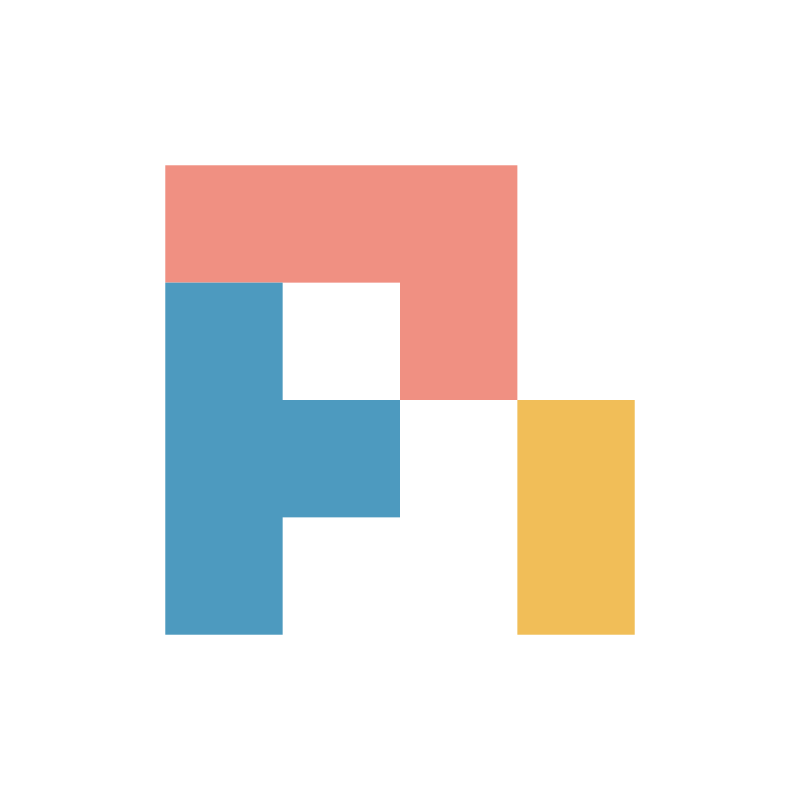
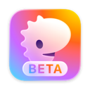

Set up your coding agents once.
tackroom syncs one ~/.agents repo into 15 coding agents and pins every outside skill to a commit.
brew install yourconscience/tap/tackroom
-
agent-skills✓pinned
b09718b✓audit pass -
lint-skills!held until
Sat 23:38✓audit passtackroom sync --allow-fresh=skill:lint-skills -
shell-kit✗blocked✗audit
1 criticaltackroom doctor audit accept skill:shell-kit exfiltration --reason "..."
- claudesynced
- codexsynced

pisynced
Works with 15 coding agents
Each gets your setup in its own format. The capability matrix shows what each one supports.
- Claude Code
- Codex
- Factory Droid
 OMP
OMP- OpenCode
- Pi
- Qwen Code
- Cursor
 Gemini CLI
Gemini CLI GitHub Copilot CLI
GitHub Copilot CLI- Grok Build
- DeepSeek Harness
 Antigravity CLI
Antigravity CLI- Kimi Code
 Amp
Amp
Terminals
 Herdr
Herdr- Tern

Rex
Herdr gets a tackroom panel with tabs for skills, roles, MCP servers, hooks and crons, Tern a crons panel and a tackroom tern workspace, Rex a tackroom rex workspace and palette actions.
Outside skills are dependencies
A skill from someone else's repo is code your agents will run. tackroom pins it in tackroom.lock, audits it, and holds anything under 72 hours old.
external_skills:
- name: agent-skills
url: https://github.com/acme/agent-skills
branch: main
commit: b09718b944a55af3ffc686d6914b7e77b5a77775
...
holds:
...
- item: skill:lint-skills
ref: git:https://github.com/example/lint-skills@6100a8179fa54931e4930385f1b0aded4afac599
published_at: "2026-11-11T23:38:13Z"
time_source: git-commit-date
hold_until: "2026-11-14T23:38:13Z"
Show the whole file
# Managed by tackroom sync / tackroom skill update. Pins commits and materialized skill ownership. version: 1 external_skills: - name: agent-skills url: https://github.com/acme/agent-skills branch: main commit: b09718b944a55af3ffc686d6914b7e77b5a77775 materialized: - code-review - pr-shepherd holds: - item: skill:agent-skills ref: git:https://github.com/acme/agent-skills@b09718b944a55af3ffc686d6914b7e77b5a77775 published_at: "2026-10-02T11:00:00Z" time_source: git-commit-date hold_until: "2026-10-05T11:00:00Z" - item: skill:lint-skills ref: git:https://github.com/example/lint-skills@6100a8179fa54931e4930385f1b0aded4afac599 published_at: "2026-11-11T23:38:13Z" time_source: git-commit-date hold_until: "2026-11-14T23:38:13Z"
-
✓pinned
b09718b$ tackroom status agent-skills ✓ b09718b https://github.com/acme/agent-skillsAgents see this commit of
acme/agent-skillsand nothing newer. Onlytackroom skill updatemoves the pin. -
!held
41h of 72h$ tackroom status held skill:lint-skills: git:https://github.com/example/lint-skills@6100a8179fa54931e4930385f1b0aded4afac599 published 2026-11-11T23:38:13Z (git-commit-date); hold ends 2026-11-14T23:38:13Z; override: tackroom sync --allow-fresh=skill:lint-skillsSync skips it and agents keep what they have. Wait, or release it now with
tackroom sync --allow-fresh=skill:lint-skills. -
✓audit pass $ tackroom doctor ✓ external skill audit 1 skills scanned, no risky patterns
Nothing to do.
-
!audit finding
agent-config-write$ tackroom doctor audit HIGH agent-config-write skills/pr-shepherd/scripts/setup-ci.sh cp ci-settings.json ~/.claude/settings.jsonReported, not blocked. Read it with
tackroom doctor auditand decide whether to keep the source. -
✗blocked
exfiltration$ tackroom status blocked skill:shell-kit: exfiltration in skills/shell-runner/scripts/report.sh; override: tackroom doctor audit accept skill:shell-kit exfiltration --reason "..."Sync skips it and any earlier pin stays. Wait for a fix upstream, or accept it with a reason:
tackroom doctor audit accept skill:shell-kit exfiltration --reason "..."
New exact npm and PyPI versions in MCP servers and Pi packages get the same hold. Your own skills, roles, hooks and MCP entries are reported, never blocked. Demo output, captured 2026-11-13. How it works
The first five minutes
One Go binary for macOS and Linux, on arm64 and x86-64.
-
Install
Homebrew (above) or npm. Both fetch the same release from GitHub and check its checksum.
- npm
npm install -g tackroom
-
Set up
tackroom setupcreates~/.agents, finds your agents, copies in what they already have after you review each item, and runs the first sync. Originals stay where they are. -
Sync
Writes each agent's native config from the repo. Run it again any time; it changes only what drifted, and skips what is held or blocked.
after adding three skill sources and one MCP server $ tackroom sync tackroom sync ✓ synced changes +2 skills, +1 mcp (claude, codex, pi) · +2 skills (omp) repo ✓ ~/.agents sources agent-skills ✓ b09718b https://github.com/acme/agent-skills ╭─────────┬──────────┬────────┬────────┬─────┬───────┬─────────┬──────────╮ │ harness │ state │ skills │ agents │ mcp │ hooks │ plugins │ packages │ ├─────────┼──────────┼────────┼────────┼─────┼───────┼─────────┼──────────┤ │ claude │ ✓ synced │ 3 │ 6 │ 1 │ - │ - │ - │ │ codex │ ✓ synced │ 3 │ 6 │ 1 │ - │ - │ - │ │ omp │ ✓ synced │ 3 │ 6 │ - │ - │ - │ - │ │ pi │ ✓ synced │ 3 │ 6 │ 1 │ - │ - │ - │ │ cursor │ ✓ synced │ 3 │ 6 │ - │ - │ - │ - │ │ gemini │ ✓ synced │ 3 │ 6 │ - │ - │ - │ - │ │ grok │ ✓ synced │ 3 │ 6 │ - │ - │ - │ - │ ╰─────────┴──────────┴────────┴────────┴─────┴───────┴─────────┴──────────╯ ... skipped 1 blocked and 1 held item(s); see tackroom status
-
Check
tackroom viewopens the dashboard you work in: every agent's sync state, each outside source as pinned, held or blocked, and your scheduled jobs, on a desktop or a phone. From a shell,tackroom statusshows what is synced, held or blocked,tackroom doctorchecks skills, roles, pins, audits and hooks, andtackroom tuishows the same state in a full-screen terminal view.$ tackroom status (excerpt, demo home) repo ✓ ~/.agents sources agent-skills ✓ b09718b https://github.com/acme/agent-skills claude ✓ synced managed 3 skills · 6 agents · 1 mcp ... Everything is synced. held or blocked (skipped by sync) blocked skill:shell-kit: exfiltration in skills/shell-runner/scripts/report.sh; override: tackroom doctor audit accept skill:shell-kit exfiltration --reason "..." held skill:lint-skills: git:https://github.com/example/lint-skills@6100a8179fa54931e4930385f1b0aded4afac599 published 2026-11-11T23:38:13Z (git-commit-date); hold ends 2026-11-14T23:38:13Z; override: tackroom sync --allow-fresh=skill:lint-skills
Next to similar tools
skillshare, rulesync, ruler and openskills cover some of the same ground. Three things set tackroom apart.
- One lockfile for every machine
- External skills are pinned in
tackroom.lock, which lives in your user-level config repo and is shared by every machine. - A 72-hour hold
- New pins and new exact package versions wait 72 hours. A held item is skipped until you release it.
- An audit gate
- An unaccepted critical finding blocks the update, and the previous pin stays.
Why the name
In a tack room each horse's gear hangs on its own peg under its own nameplate. tackroom keeps one rail in ~/.agents and fits each agent's gear to its own format. More on the design
Before you install
Will it overwrite what my agents already have?
No. setup copies existing skills, MCP servers and roles into ~/.agents after you review each one, and sync only touches entries tackroom manages. A file that differs is moved to a backup only after you agree, and tackroom restore puts it back.
Do I have to use every surface?
No. Start with skills. MCP servers, hooks and roles are separate sections of tackroom.yaml, and an agent you switch off is left alone.
How do I get the same setup on another machine?
~/.agents is a git repo. Push it to a private remote, clone it on the next machine, and run tackroom setup. setup also installs a job that pulls and syncs every 15 minutes; --no-cron skips it.
Can someone use one of my skills without tackroom?
Yes. Any skill in your repo installs with npx skills add you/agents -s name --copy.